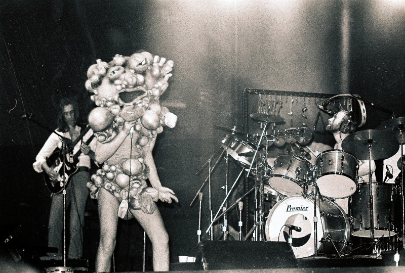
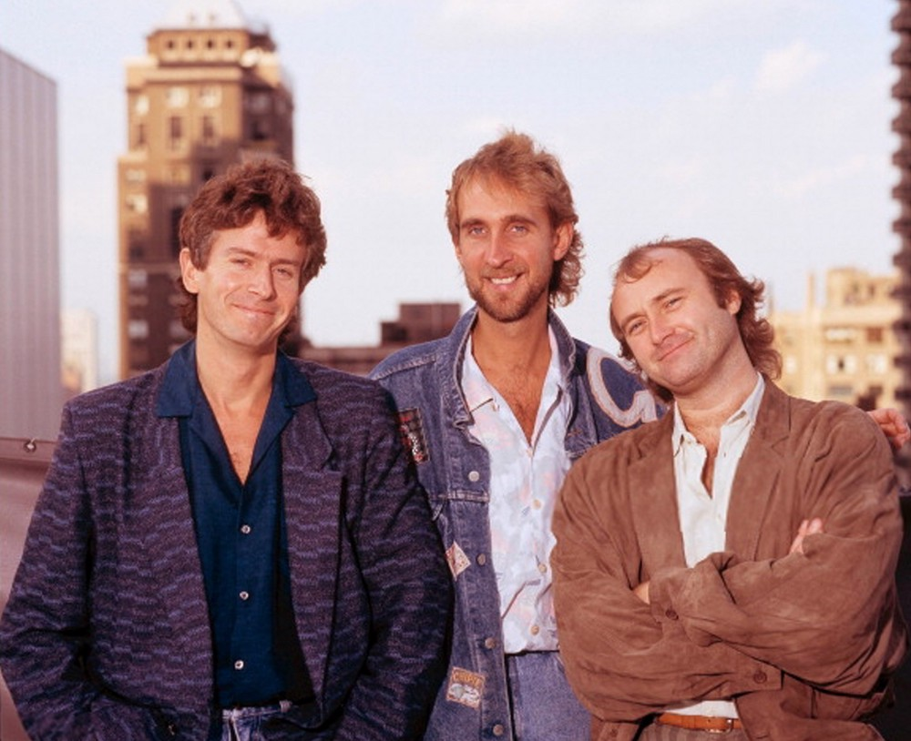

Genesis is one of the seminal bands of progressive rock, pushing numerous boundaries in its second phase of creative development, marked by the joining of singer Peter Gabriel. Their concept albums "Selling England by the Pound" and "The Lamb lies down on Broadway" combine a surreal narative with intricate costumes to create a never-before-seen experience.
 Once Peter Gabriel left the group, the main creative force became Phill Collins. The band's style changed dramatically, becoming more commercial. It's obvious if one compares "Dancing with the Moonlit Knight", from the Peter Gabriel era, to Phill Collins' "I can't dance" (both linked below).